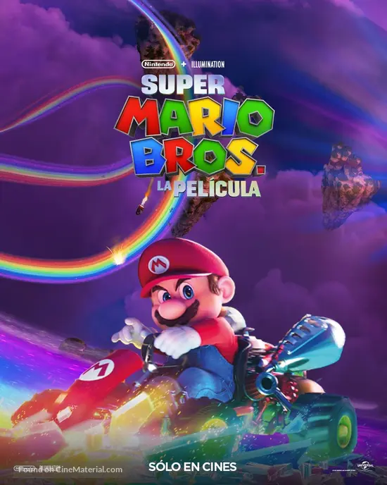

Sinopse:
Filme baseado na série de video games, Super Mario Bros, da Nintendo. Em Super Mario Bros. - O
Filme, Mario (Chris Pratt) é um encanador qualquer no bairro de Brooklyn junto com seu irmão Luigi (Charlie
Day). Um dia, Mario e Luigi vão para no reino dos cogumelos, governado pela Princesa Peach (Anya
Taylor-Joy), mas ameaçado pelo rei dos Koopas, Bowser (Jack Black), que vai fazer de tudo para conseguir
reinar todos os lugares. É então quando Luigi é raptado por Bowser e o usa para procurar Mario, o único
capaz de deter o Koopa e reestabelecer a paz. Mario terá que aprender como viver nesse novo reino perigoso,
passando por vários biomas, aprender a dirigir carros, utilizar itens que o fazem soltar bolas de fogo das
mãos, virar um animal e andar em plataformas nada confiáveis. Também estará acompanhados de amigos, como
Toad (Keegan-Michael Key) e Donkey Kong (Seth Rogan).
Gêneros:
| Filme | Ano | Nota | Status |
|---|---|---|---|
| Interestelar | 2014 | 8,7 | Oscar de Melhores Efeitos Visuais |
| Parasita | 2019 | 8,5 | Oscar de Melhor Filme |
| Divertida Mente | 2015 | 8,1 | Oscar de Melhor Animação |
| Oppenheimer | 2023 | 8,3 | Oscar de Melhor Filme |
| WALL-E | 2008 | 8,4 | Oscar de Melhor Animação |
Este catálogo de filmes foi desenvolvido como parte do Roteiro 02 da disciplina Desenvolvimento Web I,
disponibilizada pela UNEB.
Nossas redes sociais:
Instagram | X (Twitter)